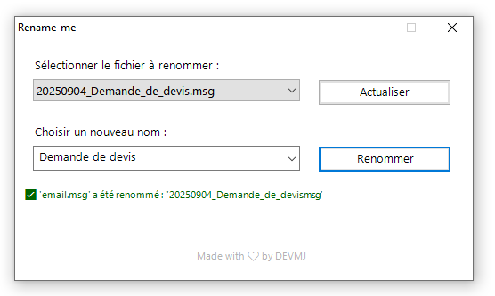

# ------------------------------------------------- # Chargement des assemblages nécessaires # ------------------------------------------------- Add-Type -AssemblyName System.Windows.Forms Add-Type -AssemblyName System.Drawing # ------------------------------------------------- # Fenêtre principale # ------------------------------------------------- $form = New-Object System.Windows.Forms.Form $form.Text = "Rename-me" $form.Size = New-Object System.Drawing.Size(520, 300) # Définir la police par défaut pour tous les contrôles $form.Font = New-Object System.Drawing.Font("Segoe UI Emoji", 10, [System.Drawing.FontStyle]::Regular) $form.FormBorderStyle = 'FixedDialog' $form.MaximizeBox = $false $form.BackColor = [System.Drawing.Color]::FromArgb(255, 255, 255, 255) $form.StartPosition = "CenterScreen" # ------------------------------------------------- # Label « Sélectionner le fichier à renommer » # ------------------------------------------------- $lblFile = New-Object System.Windows.Forms.Label $lblFile.Text = "Sélectionner le fichier à renommer :" $lblFile.AutoSize = $true $lblFile.Location = New-Object System.Drawing.Point(20,20) $form.Controls.Add($lblFile) # ------------------------------------------------- # ComboBox des fichiers .msg # ------------------------------------------------- $comboFiles = New-Object System.Windows.Forms.ComboBox $comboFiles.Location = New-Object System.Drawing.Point(20,45) $comboFiles.Size = New-Object System.Drawing.Size(300,20) $comboFiles.DropDownStyle = 'DropDownList' $form.Controls.Add($comboFiles) # ------------------------------------------------- # Label « Choisir un nouveau nom » # ------------------------------------------------- $lblNewName = New-Object System.Windows.Forms.Label $lblNewName.Text = "Choisir un nouveau nom :" $lblNewName.AutoSize = $true $lblNewName.Location = New-Object System.Drawing.Point(20,95) $form.Controls.Add($lblNewName) # ------------------------------------------------- # ComboBox des options de renommage (avec titres) # ------------------------------------------------- $comboOptions = New-Object System.Windows.Forms.ComboBox $comboOptions.Location = New-Object System.Drawing.Point(20,120) $comboOptions.Size = New-Object System.Drawing.Size(300,20) $comboOptions.DropDownStyle = 'DropDownList' $comboOptions.DropDownHeight = 300 $form.Controls.Add($comboOptions) # ----- Ajout des items (titres + options) ----- $comboOptions.Items.AddRange(@( "--- Relances ---", "1ère relance", "2ème relance", "3ème relance", "4ème relance", "--- Complément d'information ---", "Information complémentaire", "Echanges de mails", "Demande de précisions", "Demande de conseils", "Demande de photos", "Suivi de la situation technique", "--- DEVIS ---", "Demande de devis", "Demande de validation devis par RS", "Devis", "Proposition tarifaire(badge/télécommande)", "Accord hiérarchie pour validation devis", "Bon pour accord", "--- INTERVENTIONS ---", "Demande d'intervention", "Confirm. prise en charge de la demande", "Demande d'une nouvelle intervention", "Demande de prise en charge GPA", "Demande de la date d'intervention", "Demande du rapport d'intervention", "Photos", "Photos après visite technique", "Intervention programmée", "Intervention annulée", "Intervention refusée", "Intervention réalisée", "Rapport d'intervention", "---ASSURANCES---", "Rapport d'Expertise", "Constat Amiable Dégât Des Eaux", "--- AUTRES ---", "Raccordement Fibre Optique", "Facture", "Réponse" )) # ------------------------------------------------- # Variables de suivi # ------------------------------------------------- $script:previousIndex = -1 # aucune sélection au départ $script:msgFiles = @() # remplie lors du rafraîchissement # ------------------------------------------------- # Mode propriétaire (owner‑draw) – style des titres # ------------------------------------------------- $comboOptions.DrawMode = [System.Windows.Forms.DrawMode]::OwnerDrawFixed $comboOptions.ItemHeight = 22 # un peu plus haut pour le rendu # Tableau qui indique, pour chaque index, si c’est un titre $itemsInfo = @() foreach ($txt in $comboOptions.Items) { $itemsInfo += [pscustomobject]@{ Text = $txt IsTitle = $txt -like '---*' } } # ------------------------------------------------- # Gestion du rendu propriétaire (owner‑draw) du ComboBox d’options # ------------------------------------------------- $comboOptions.add_DrawItem({ param($sender,$e) # Aucun item (index < 0) → rien à dessiner if ($e.Index -lt 0) { return } $g = $e.Graphics $rect = $e.Bounds # Rectangle contenant la zone à colorer $info = $itemsInfo[$e.Index] # Tableau d’informations (Text / IsTitle) # -------- Couleur de fond (highlight ou normal) -------- if ($e.State -band [System.Windows.Forms.DrawItemState]::Selected) { $bg = [System.Drawing.SystemColors]::Highlight $fg = [System.Drawing.SystemColors]::HighlightText } else { $bg = $comboOptions.BackColor $fg = $comboOptions.ForeColor } $g.FillRectangle([System.Drawing.SolidBrush]::new($bg), $rect) # -------- Style du texte (titre = gras + gris) -------- if ($info.IsTitle) { $font = [System.Drawing.Font]::new($comboOptions.Font, [System.Drawing.FontStyle]::Bold) $brush = [System.Drawing.SolidBrush]::new([System.Drawing.Color]::Gray) } else { $font = $comboOptions.Font $brush = [System.Drawing.SolidBrush]::new($fg) } # -------- Rectangle de texte (on décale de 2 px à gauche) -------- $textRectF = [System.Drawing.RectangleF]::new( $rect.X + 2, $rect.Y, $rect.Width - 4, $rect.Height ) # -------- Dessin du texte (utilise l’overload qui accepte RectangleF) -------- $g.DrawString($info.Text, $font, $brush, $textRectF) # -------- Ligne de séparation sous chaque titre -------- if ($info.IsTitle) { $pen = [System.Drawing.Pen]::new([System.Drawing.Color]::LightGray) $y = $rect.Bottom - 1 $g.DrawLine($pen, $rect.Left, $y, $rect.Right, $y) } }) # ------------------------------------------------- # Empêcher la sélection des titres # ------------------------------------------------- $comboOptions.add_SelectedIndexChanged({ $selected = $comboOptions.SelectedItem if ($selected -like '---*') { # C’est un titre → on revient à la valeur précédente $comboOptions.SelectedIndex = $script:previousIndex } else { # C’est un vrai choix → on mémorise l’indice actuel $script:previousIndex = $comboOptions.SelectedIndex } }) # ------------------------------------------------- # Boutons Renommer # ------------------------------------------------- $btnRenommer = New-Object System.Windows.Forms.Button $btnRenommer.Text = "Renommer" $btnRenommer.Location = New-Object System.Drawing.Point(340,120) $btnRenommer.Size = New-Object System.Drawing.Size(150,30) $form.Controls.Add($btnRenommer) # ------------------------------------------------- # Boutons Actualiser # ------------------------------------------------- $btnRefresh = New-Object System.Windows.Forms.Button $btnRefresh.Text = "Actualiser" $btnRefresh.Location = New-Object System.Drawing.Point(340,45) $btnRefresh.Size = New-Object System.Drawing.Size(150,30) $form.Controls.Add($btnRefresh) # ------------------------------------------------- # Label d'information (zone de texte en bas) # ------------------------------------------------- $labelStatus = New-Object System.Windows.Forms.Label $labelStatus.Location = New-Object System.Drawing.Point(0, 160) $labelStatus.Font = New-Object System.Drawing.Font("Segoe UI Emoji", 8, [System.Drawing.FontStyle]::Regular) $labelStatus.Padding = New-Object System.Windows.Forms.Padding(8) $labelStatus.AutoSize = $false # on contrôle la taille nous‑mêmes $labelStatus.Width = $form.ClientSize.Width - 20 # marge de 10 px à gauche & droite $labelStatus.Height = 60 $form.Controls.Add($labelStatus) # ------------------------------------------------- # Label Footer # ------------------------------------------------- $labelFooter = New-Object System.Windows.Forms.Label $labelFooter.Text = "Made with ❤ by DEVMJ" $labelFooter.ForeColor = [System.Drawing.Color]::FromArgb(50, 179, 179, 179) $labelFooter.Font = New-Object System.Drawing.Font("Segoe UI Emoji", 8, [System.Drawing.FontStyle]::Regular) $labelFooter.AutoSize = $true # Centrage horizontal et vertical $labelFooter.Location = New-Object System.Drawing.Point( (($Form.ClientSize.Width - $labelFooter.Width) / 2), ($Form.ClientSize.Height - $labelFooter.Height - 1) ) # Création du tooltip $toolTip = New-Object System.Windows.Forms.ToolTip $toolTip.SetToolTip($labelFooter, "En savoir plus") # Curseur en forme de main $labelFooter.Cursor = [System.Windows.Forms.Cursors]::Hand # Action au clic -> ouvre GitHub $labelFooter.Add_Click({ Start-Process "https://github.com/DEVMJ00/Rename-me" }) $form.Controls.Add($labelFooter) # ------------------------------------------------- # Fonction de rafraîchissement de la liste .msg # ------------------------------------------------- function Refresh-MsgList { $comboFiles.Items.Clear() $script:msgFiles = Get-ChildItem -Path "." -Filter "*.msg" | Select-Object -ExpandProperty Name if ($script:msgFiles.Count -eq 0) { $labelStatus.ForeColor = 'DarkRed' $labelStatus.Text = "Aucun e-mail n'est présent dans le dossier." return } $comboFiles.Items.AddRange($script:msgFiles) $comboFiles.SelectedIndex = 0 $toolTip.SetToolTip($comboFiles,$comboFiles.SelectedItem) $labelStatus.ForeColor = 'DarkBlue' $labelStatus.Text = "🔄 Liste actualisée. $($script:msgFiles.Count) fichier(s) trouvé(s)." } # ------------------------------------------------- # Mapping des libellés → suffixes de fichier # ------------------------------------------------- $mapping = @{ "1ère relance" = "1ere_relance" "2ème relance" = "2eme_relance" "3ème relance" = "3eme_relance" "4ème relance" = "4eme_relance" "Information complémentaire" = "Information_complementaire" "Echanges de mails" = "Echanges_de_mails" "Demande de devis" = "Demande_de_devis" "Demande de validation devis par RS" = "Demande_accord_devis_par_RS" "Accord hiérarchie pour validation devis" = "accord_pour_validation_du_devis" "Devis" = "Devis" "Proposition tarifaire(badge/télécommande)" = "Proposition_tarifaire" "Demande d'intervention" = "Demande_d_intervention" "Confirm. prise en charge de la demande" = "Confirmation_prise_en_charge" "Demande d'une nouvelle intervention" = "Demande_d_une_nouvelle_intervention" "Bon pour accord" = "Bon_Pour_Accord" "Demande de précisions" = "Demande_de_precisions" "Demande de conseils" = "Demande_de_conseils" "Demande de prise en charge GPA" = "Demande_prise_en_charge_GPA" "Demande de photos" = "Demande_de_photos" "Suivi de la situation technique" = "Suivi_de_la_situation_technique" "Demande de la date d'intervention" = "Demande_date_intervention" "Demande du rapport d'intervention" = "Demande_rapport_d_intervention" "Photos" = "Photos" "Photos après visite technique" = "Photos_visite_technique" "Intervention programmée" = "Intervention_a_venir" "Intervention annulée" = "Intervention_annulee" "Intervention refusée" = "Intervention_refusee" "Intervention réalisée" = "Confirmation_intervention_terminee" "Rapport d'intervention" = "Rapport_d_intervention" "Raccordement Fibre Optique" = "Information_sur_raccordement_fibre" "Constat Amiable Dégât Des Eaux" = "Constat DDE" "Rapport d'Expertise" = "Rapport_d_expertise" "Facture" = "Facture" "Réponse" = "Reponse" } # ------------------------------------------------- # Action du bouton Actualiser # ------------------------------------------------- $btnRefresh.Add_Click({ Refresh-MsgList }) # ------------------------------------------------- # Action du bouton Renommer # ------------------------------------------------- $btnRenommer.Add_Click({ $file = $comboFiles.SelectedItem $choice = $comboOptions.SelectedItem if (-not $file -or -not $choice) { $labelStatus.ForeColor = 'DarkRed' $labelStatus.Text = "Veuillez choisir un fichier et une action." return } $suffix = $mapping[$choice] if (-not $suffix) { $suffix = "Fichier" } $date = Get-Date -Format "yyyyMMdd" $ext = [System.IO.Path]::GetExtension($file) $newName = "${date}_${suffix}${ext}" try { Rename-Item -Path $file -NewName $newName -ErrorAction Stop Refresh-MsgList # on recharge la liste pour refléter le nouveau nom Start-Sleep -Milliseconds 1000 # ← pause de 1 s $labelStatus.ForeColor = 'DarkGreen' $labelStatus.Text = "✅ '$file' a été renommé : '$newName'" } catch { $labelStatus.ForeColor = 'DarkRed' $labelStatus.Text = "🚫 Erreur : $_" } }) # ------------------------------------------------- # Chargement initial de la liste .msg # ------------------------------------------------- Refresh-MsgList # Sélection par défaut du premier titre (pour éviter que le ComboBox démarre vide) $comboOptions.SelectedIndex = 0 # ------------------------------------------------- # Lancement de l'interface # ------------------------------------------------- [void]$form.ShowDialog()